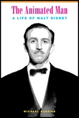
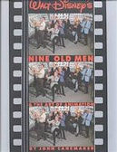
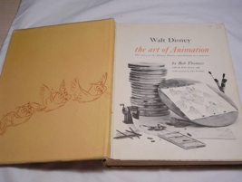
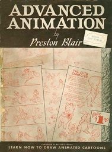
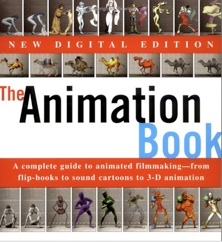

Books

Book Resources





Robert D. Field, The Art of Walt Disney
(New York: The Macmillan Co., 1942)
Concentrates on the traditionally artistic aspects of Disney animation, with a focus on the early features and shorts from the 1940’s and 1950’s.
Find in a library: http://www.worldcatlibraries.org/oclc/1192053&referer=brief_results



Animation History
Leonard Maltin, Of mice and magic: a history of American animated cartoons
(New York: New American Library, 1980)
This book, along with Charles Solomon’s book Enchanted Drawings, are among the most well-known books about animation history.
Find in a library: http://www.worldcatlibraries.org/oclc/6331220&referer=brief_results
Frank Thomas and Ollie Johnston, The Illusion of Life: Disney Animation*
(New York: Abbeville Press, 1981)
Written by two of Disney’s most well-known Nine Old Men, this book is a canonical work in the field of animation literature. It contains a lot of information related to techniques and methods, as well as the history and various personalities of the early days of the Disney studios.
Find in a library: http://www.worldcatlibraries.org/oclc/7900428&referer=brief_results
*covers many aspects of animation technique as well
Charles Solomon, ed., The Art of the Animated Image
(Los Angeles: American Film Institute, 1987)
Find in a library: http://www.worldcatlibraries.org/oclc/19274435&referer=brief_results
Richard Holliss and Brian Sibley, The Disney Studio Story
(New York: Crow, 1988)
Find in a library: http://www.worldcatlibraries.org/oclc/18163651
Charles Solomon, Enchanted Drawings: The History of Animation
(New York: Random House, 1989)
Frequently touted as one of the standard sources on the history of animation (at least through the 1980’s, Solomon is a leading scholar in animation history.
Find in a library:
http://www.worldcatlibraries.org/oclc/19811383&referer=brief_results
John Canemaker, Walt’s Disney’s Nine Old Men and the Art of Animation
(London: Turnaround, 2002)
Arranged in sections devoted to each of Disney’s Nine, comprehensive & thorough.
Find in a library:
http://www.worldcatlibraries.org/oclc/48531604
Michael Barrier, Hollywood Cartoons: American Animation in Its Golden Age
(Oxford: Oxford University Press, 2003)
Comprehensive overview of the history of American animated film, concentrating on Disney, MGM and Warner Brothers in the 1930’s – 1950’s.
Find in a library:
http://www.worldcatlibraries.org/oclc/39045024
Amid Amidi, Cartoon modern: style and design in fifties animation
(San Francisco: Chronicle Books, 2006)
Specific in its scope and covering an area of animation previously neglected in animation literature, Amidi’s book is a wonderful resource.
Find in a library:
http://www.worldcatlibraries.org/oclc/60881694
Michael Barrier, The Animated Man: A Life of Walt Disney
(Berkeley: University of California Press, 2007)
Just published and receiving rave critical reviews, this new look at the animation mogul is based on hundreds of interviews Barrier conducted over several decades, as well as intensive archival research.
Find in a library:
http://www.worldcatlibraries.org/oclc/70864455
Animation Technique:
Bob Thomas, The Art of Animation: the story of the Disney Studio contribution to a new art (Jamestown: Golden Press, 1958)
Overview of basic animation techniques, definitions of the various roles of different types of animation employees (layout men, sequence directors, etc). Uses Disney as its company model, with heavy emphasis on Sleeping Beauty (the latest feature at the time of the book’s writing).
Find in a library:
http://www.worldcatlibraries.org/oclc/400737
Preston Blair, Advanced Animation: Learn How to Draw Animated Cartoons
(New York: Walter Foster Art Series #26, 1942)
Old-school animation techniques from Preston Blair, former Disney (and Warner Brothers) animator.
Find in a library:
http://www.worldcatlibraries.org/oclc/4561800
Preston Blair, How to Animate Film Cartoons
(New York: Walter Foster Art Series #190, 1980)
Follow-up book to the one above, covers more modern techniques.
Find in a library:
http://www.worldcatlibraries.org/oclc/20073344&tab=editions
Eli L Levitan, Handbook of animation techniques
(New York: Van Nostrand Reinhold Co., 1979)
Illuminates on some processes employed in early cel animation
as early as the 1950’s
Find in a library:
http://www.worldcatlibraries.org/oclc/4857577&referer=brief_results
Kit Laybourne, The Animation Book: a complete guide to animated filmmaking, from filp-books to sound cartoons
(New York: Crown, 1979)
Practical guide to many different animation techniques, including (now outdated but still interesting) animation supplies and materials guides.
Find in a library:
http://www.worldcatlibraries.org/oclc/4932959
Roy P Madsen, Animated Film: Concepts, Methods, Uses
(New York: Interland, 1969)
Technical overview of animation processes, with lots of illustrations and diagrams.
Find in a library: